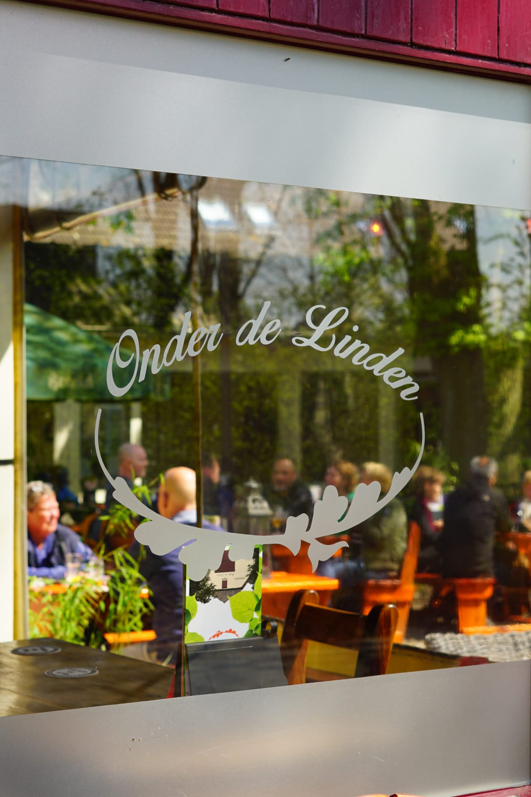
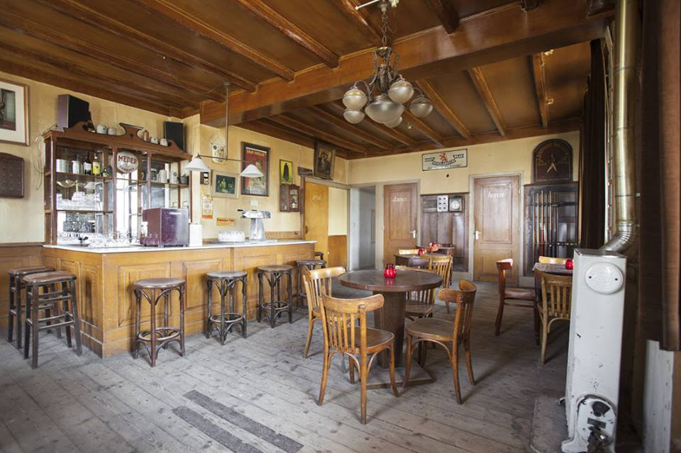
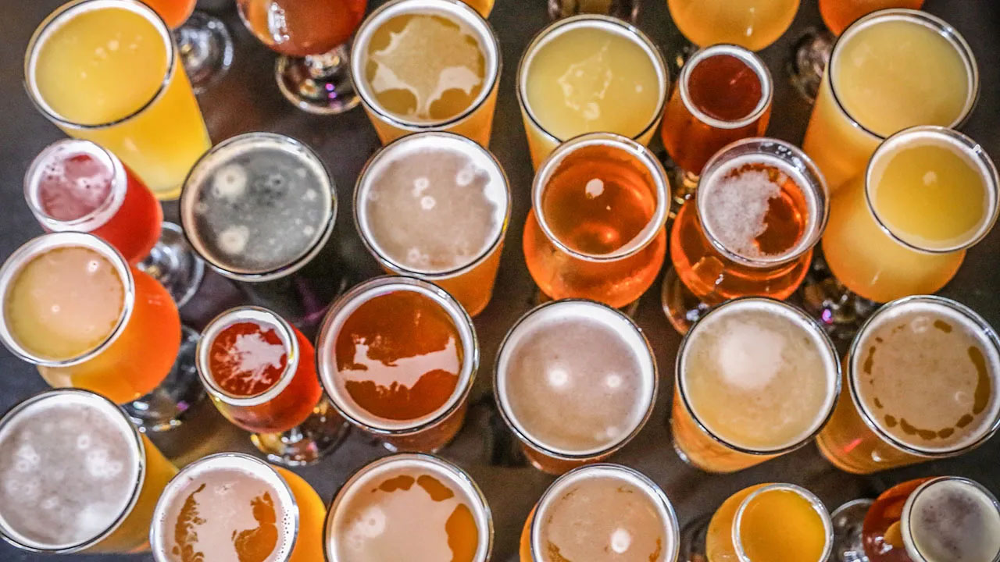
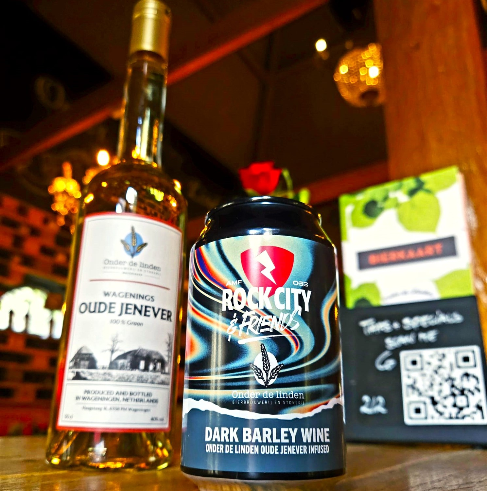
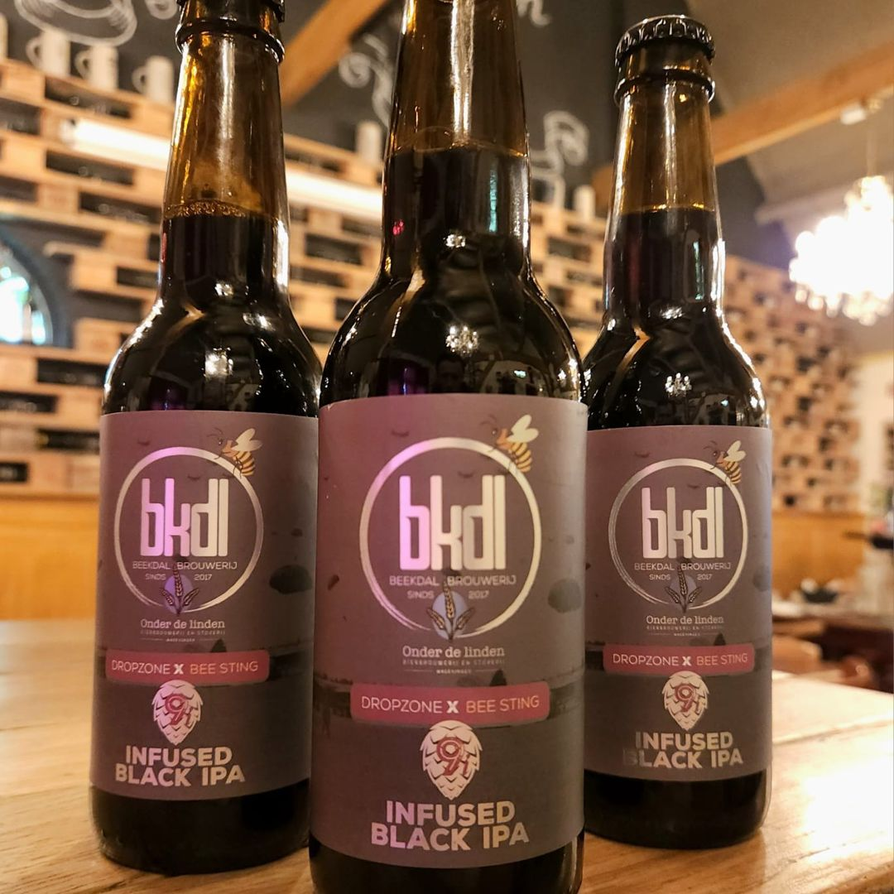
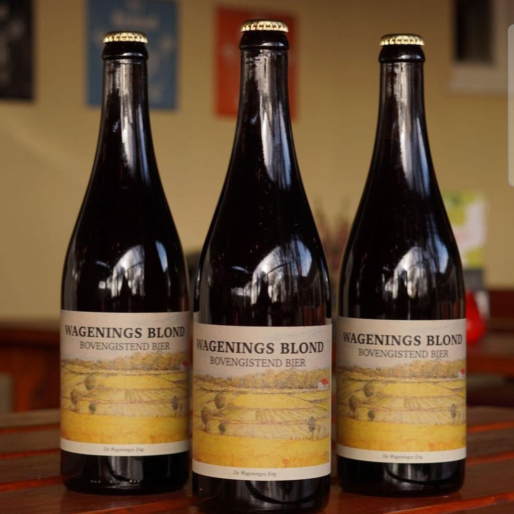
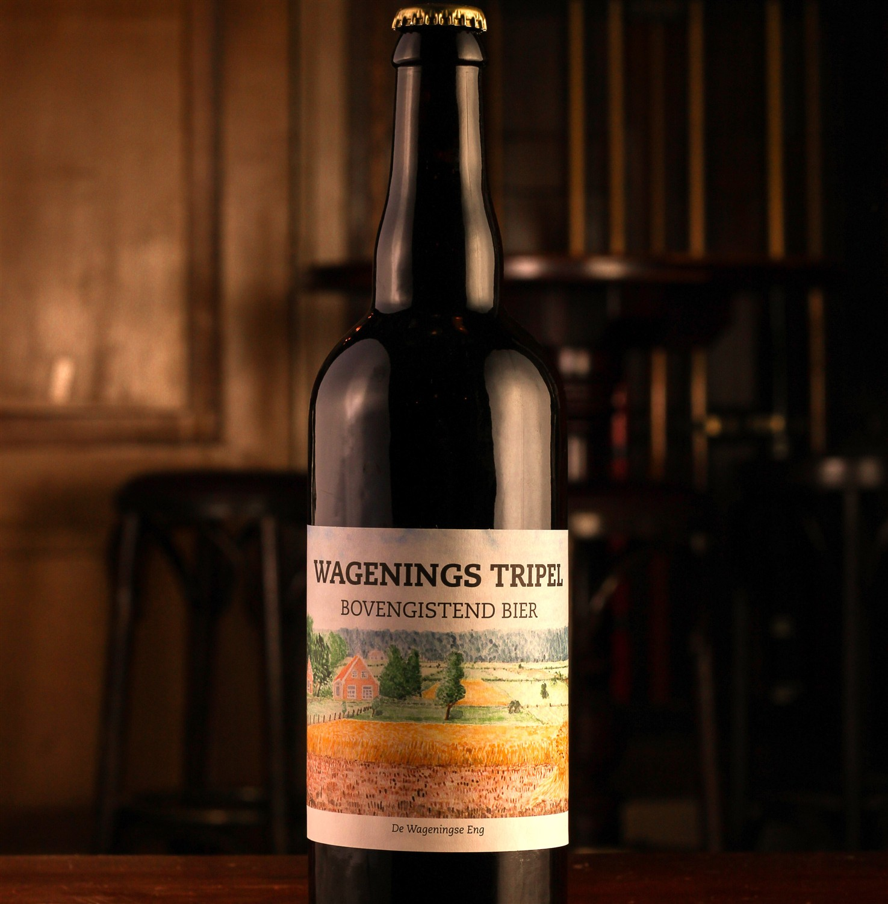
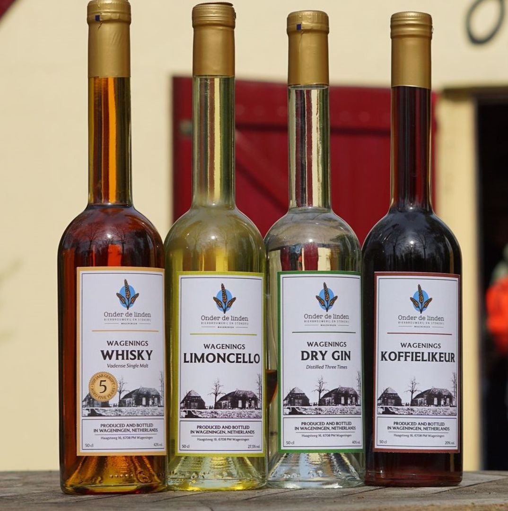

Kroketten met brood€ 11,00
Keuze uit bruin- of desembrood met:
- Rundvleeskroketten
- Chorizokroketjes
- Geitenkaaskroketjesvega
- Oesterzwamkrokettenvegan
Haagsteeg 16, Wageningen
Juweel van een café in zijn puurste oorspronkelijke vorm.

Onder de Linden is een van de oudste café’s van Nederland, vroeger op een cruciale plek tussen Rhenen, Ede, Veenendaal en Wageningen. Al sinds 1728 is het pand in gebruik als schenkerij.
Als “Café aan de Brug” lag het aan druk vaarwater van de haven aan de Rijn richting Ede/Veenendaal en aan een brug richting Rhenen. In het meer recente Wageningse verleden stond het café vooral bekend als het café van de legendarische Mies Quint, vader van de vroegere doelman van FC Wageningen Kees Quint.
Nu nog steeds is Onder de Linden een heerlijke plek om te vertoeven. Aan het kruispunt van diverse fietsroutes, gelegen dicht bij het rustige Binnenveld en tussen de kennisintensieve bedrijven, campus en woonwijken, is het een oase van rust.
Onder de bomen en de sjiekste verandas van Wageningen biedt Onder de Linden een heerlijke plek om even uit te blazen na een wandel- of fietstocht of om samen met collega’s te lunchen, dineren of te borrelen. Met meer dan 75 speciaalbieren, lekkere wijnen en cocktails (ook alcoholvrij) is er voor elk moment voor ieder wat wils.
Zelfs voor uw feest of partij is Onder de Linden ideaal; wij maken van uw gelegenheid gegarandeerd een feest! Onder de Linden ontzorgt, neem vrijblijvend contact op voor alle mogelijkheden.

Meer dan 75 speciaalbieren, lekkere wijnen en cocktails (ook alcoholvrij).
Onze bierkaart wisselt regelmatig. Hieronder een greep uit de tapbieren; de actuele kaart (tap, eigen bieren, specials en vaste flessen) vind je op Untappd.

Blond · 6.5% · Onder de Linden
Wheat beer – Dunkelweizen · 6% · Texels
IPA – New England · 6% · Rock City Brewing
Freeze-distilled beer · 12% · Gulpener Bierbrouwerij
IPA – New England · 6.6% · Brouwerij LOST
IPA – Imperial · 8.5% · Moersleutel Craft Brewery
Bock – Single · 6.5% · Frontaal Brewing Co.
Wheat beer – Hefeweizen · 5.4% · Weihenstephan
Pale ale – Belgian · 5.2% · De Koninck
Belgian tripel · 8% · De Blauwe IJsbeer
Bock – Doppelbock · 8% · Muifelbrouwerij
Belgian tripel · 11% · Brouwerij Van Steenberge
Belgian quadrupel · 10.5% · Bierbrouwerij de Koningshoeven
Stout – Irish dry · 4.2% · Guinness
IPA · 0.3% · Jopen
Pilsner · 5% · Brand
Alcoholpercentage, brouwerij, maten en prijzen komen van hun eigen bierkaart.
Brouwerij Onder de Linden werd in december 1988 geopend. Het bedrijf is gevestigd in een voor dat doel verbouwde voormalige schaapskooi, die behoort tot de opstallen van Café Onder de Linden. Tegenwoordig is de brouwerij gelegen tussen de nieuwbouw, industrie en universiteitscomplexen, maar vroeger lag het aan de rand van een uitgestrekt heidegebied. Het Café, nog ingericht zoals in de jaren 50, doet dienst als proeflokaal. Het is ook de bakermat van de brouwerij. De productie-omvang van de brouwerij is vrij gering. Het grootste gedeelte van het bier verlaat de brouwerij op vat en is verkrijgbaar in de regio Wageningen.
Op dit moment wordt in de Brouwerij van Café Onder de Linden onder andere Wagenings Blond en Wagenings Tripel gebrouwen. Dit bier wordt geschonken in het eigen café en verschillende zaken in het centrum van Wageningen. Daarnaast is het op fles exclusief verkrijgbaar bij Wijnhandel Woudenberg en Mitra Bennekom Arjo van Oostenbrugge.
Naast bier wordt er in de brouwerij ook gestookt. De serie gedestilleerd omvat op dit moment jonge jenever (35 procent alcohol), wodka (40 procent), dry gin (45 procent), oude jenever (40 procent), 3 jaar en 5 jaar oude whisky (42 procent) en verschillende likeuren. Alles gemaakt van de beste grondstoffen en de restproducten worden verwerkt tot veevoer voor een lokale boer.
De bierwereld is een dynamische sector. Wat de toekomst gaat brengen is altijd onzeker, maar dat wij er vol vertrouwen in gaan staat vast. Het Wagenings Blond staat al 35 jaar op kaarten in de omgeving en zal dit ook blijven de komende jaren.

Alweer onze 3e collab, deze keer met onze vrienden van Rock City uit Amersfoort. Zij brouwden een heerlijke dark barley wine met een beetje tarwe en rogge. Die laatste zorgt, samen met onze Oude Jenever, voor een heerlijke kruidige toets.

Onze nieuwste samenwerking, nu met onze vrienden van BKDL. Hun Black IPA, de Dropzone X, maar dan met een extra “sting” van onze honinglikeur.

Het vlaggenschip van onze brouwerij. Een heerlijk doordrinkbaar blond met een aangenaam bittertje en een zachte fruitigheid.
Een Red IPA met een stevige bitterheid en een volle smaak door het gebruik van geroosterde mouten.

Het paradepaardje van de brouwerij. Een volmoutige tripel naar Belgisch recept. Door toevoeging van een beetje caramout en cascadehop krijgt hij iets meer kleur en een mooie fruitige afdronk.

Al bijna 10 jaar zijn wij ervaren in het verzorgen van de meest uiteenlopende bijeenkomsten.
Of het nou gaat om een verjaardag, promotieborrel, jubileum, afscheid of zomaar, wij nemen u graag de zorgen van de organisatie uit handen. Maatwerk is onze specialiteit en u hoeft alleen de uitnodiging te versturen.
Reserveer bijvoorbeeld onze gezellige gelagkamer of kies voor een borrel buiten op onze (beschutte en verwarmde) veranda of een gedeelte van het open terras. Bekijk de verschillende ruimtes ook eens via hun online tour. Combineer dit met een heerlijk buffet uit eigen keuken of een Silent Disco in de avond en maak van elke gelegenheid een feest.
Wilt u liever van tevoren weten wat de middag of avond gaat kosten, kies dan voor een van onze arrangementen. Naar wens zijn deze pakketten uit te breiden of aan te passen naar persoonlijke voorkeuren.
Vanaf 10 personen
Naar wens uit te breiden met huisgemaakte soep vooraf of toetjesassortiment als nagerecht (€ 23,50 p.p.) of als 3-gangen (€ 27,50 p.p.). Meerprijs carpaccio i.p.v. soep +€ 2,00 p.p.; meerprijs Grand Desert i.p.v. toetjesassortiment +€ 2,00 p.p.
Vanaf 10 personen
Naar wens uit te breiden met huisgemaakte soep vooraf of toetjesassortiment als nagerecht (€ 26,00 p.p.) of als 3-gangen (€ 30,00 p.p.). Meerprijs carpaccio i.p.v. soep +€ 2,00 p.p.; meerprijs Grand Desert i.p.v. toetjesassortiment +€ 2,00 p.p.
Vanaf 5 personen
In overleg is meer mogelijk, neem contact op voor de opties.
Vanaf 25 personen
Vanaf 25 personen – meest gekozen
Vanaf 25 personen
Vanaf 25 personen
Vanaf 30 personen
Vanaf 8 personen – ook op locatie mogelijk
Naar wens uit te breiden met: melk/koffie/thee/sappenbuffet € 6,00 p.p.; handfruit € 1,50 p.p.; broodje kroket (vlees/vegan) € 4,75 p.p.; mini hamburger € 4,00 p.p.; saucijzenbroodje € 4,00 p.p. Neem contact op voor de mogelijkheden en kosten op locatie.
Vanaf 8 personen – ook op locatie mogelijk
Naar wens uit te breiden met een melk/koffie/thee/sappenbuffet voor € 6,00 p.p. extra. Neem contact op voor de mogelijkheden en kosten op locatie.
Naar wens zijn alle pakketten uit te breiden met:
Daarnaast kunnen we andere, persoonlijke wensen in overleg verzorgen. Neem hiervoor en voor reserveringen contact met ons op.
Wilt u genieten van de warme, huiselijke sfeer en de gezelligheid van Onder de Linden, maar liever op uw eigen locatie? Dat kan!
Wij verzorgen met liefde catering op maat, zodat uw bijeenkomst – groot of klein – een succes wordt. Of het nu gaat om een zakelijke lunch, een sfeervolle borrel met luxe hapjes of een uitgebreid diner, wij zorgen dat de catering naadloos aansluit bij uw evenement. Elk detail wordt met zorg en aandacht uitgewerkt, zodat u en uw gasten optimaal kunnen genieten.
Samen met u stellen we een menu samen dat perfect past bij uw wensen en de sfeer van het moment. Heeft u speciale dieetwensen of voorkeuren? Geen probleem! Bij Onder de Linden houden we graag rekening met alle wensen, van vegetarische gerechten tot allergieën. Ons team zorgt ervoor dat iedereen aan tafel kan genieten van smaakvolle en verrassende gerechten.
Binnenkort wat te vieren of wilt u meer informatie? Neem dan vrijblijvend contact op via het contactformulier. Zij nemen dan zo snel mogelijk contact met u op.
Diner voor thuis
Maandag t/m zondag. Na 16:00 uw bestelling (voor dezelfde avond) graag doorbellen naar 0317 - 84 35 59.
Al onze afhaalgerechten worden geserveerd met friet en salade. Afhaaltijden zijn elke dag tussen 17:00 en 20:00 uur, per kwartier.
Voor al uw vragen over catering, buffetten, zaalhuur en reserveringen (vanaf 10 personen), neem contact met ons op via onderstaand formulier.
Met gezelschappen kleiner dan 10 personen kunt u gewoon langskomen; hiervoor zoeken wij ter plekke een leuke plaats.